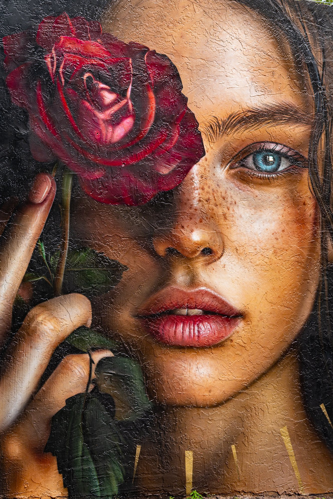

Horizons Croisés Photographie
Between flights, I turn my gaze upon the world.
Roads, faces, light from faraway places…
Here meet the horizons I have had the good fortune to cross.

- MIA
- The Veiled Rose
- Miami
- Street Art
Fine art gallery
Stopover board